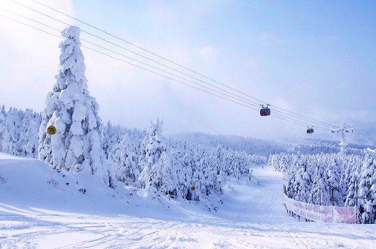
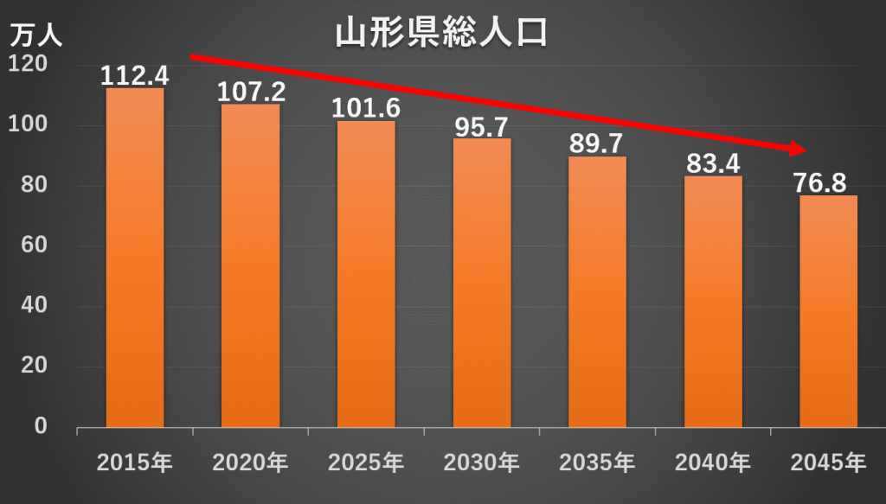
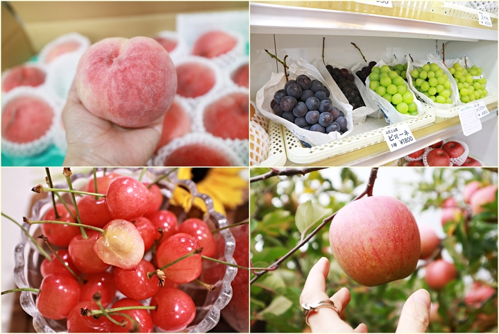
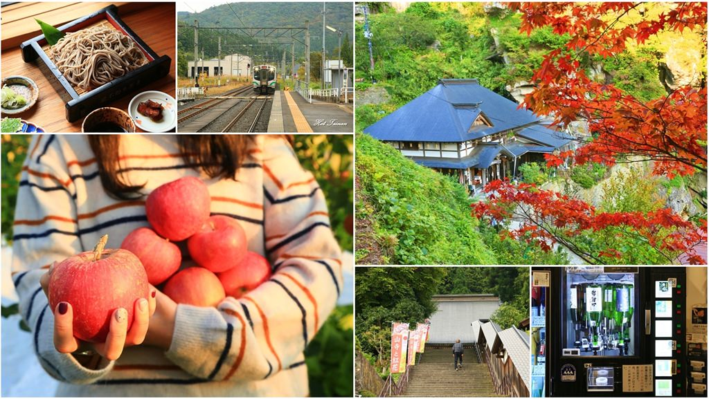

山形縣基本介紹
山形県の基本紹介\ Basic introduction to Yamagata Prefecture
氣候

「由於山形市位於盆地之中，因此呈現內陸性氣候的特徵，冬夏溫差較為明顯。山形市在夏季是東北地方最為炎熱的地區之一，常有最高氣溫超過35℃的情況出現。但由於一日之內氣溫變化明顯，因此夜間和早晨氣溫較為涼爽。
而冬季的山形市氣候寒冷，亦不乏降雪天氣出現，但由於出羽山地（日語：出羽山地）遮擋住了在日本海發生的雪雲，使得山形市是山形縣內降雪量較少的地區。
人口

1920年日本首次人口普查時，山形市有人口48,399人。此後隨著都市發展和轄區範圍，山形市人口持續增加，在1950年人口普查時超過10萬人大關。1970年人口普查時，山形市人口突破20萬大關。
1980年代之後，由於人口高齡化、少子化，山形市人口增長趨緩。2005年時，山形市人口達到峰值256,012人，此後開始減少。
經濟

山形市耕地面積有5,200公頃，農業就業人口有3,634人。2015年，山形市的農業生產額有113.7億日元，其中以果實類的比例最多，其次是稻米類和蔬菜類。
山形縣有「果樹王國」之稱，山形市的主要水果產品有櫻桃、法蘭西梨、葡萄等。山形市的主要蔬菜產品有食用菊花、菠菜、南瓜等。
交通
山形市內的鐵路由東日本旅客鐵道運營。市內有奧羽本線中福島站至新莊站部分的山形線、連接山形站和左澤站的左澤線、連接山形市羽前千歲站和仙台市仙台站的仙山線，合共三條在來線；以及山形新幹線一條迷你新幹線。
2010年度，山形市內鐵路交通乘客數達508萬人次。山形站是山形市鐵路交通的中心，2015年度日均客流量有1.07萬人次，佔山形市鐵路總客流量約八成。
觀光
 位於山形、宮城兩縣交界處的藏王連峰屬於藏王國定公園，以火山地形著稱。山形藏王溫泉滑雪場（日語：山形蔵王温泉スキー場）是日本面積最大的滑雪場，擁有多條面向不同遊客的滑道。 藏王溫泉的泉水呈乳白色，是強酸性的硫磺泉，具有促進血液循環和美膚的效果，是東北地方最大的溫泉度假地之一。